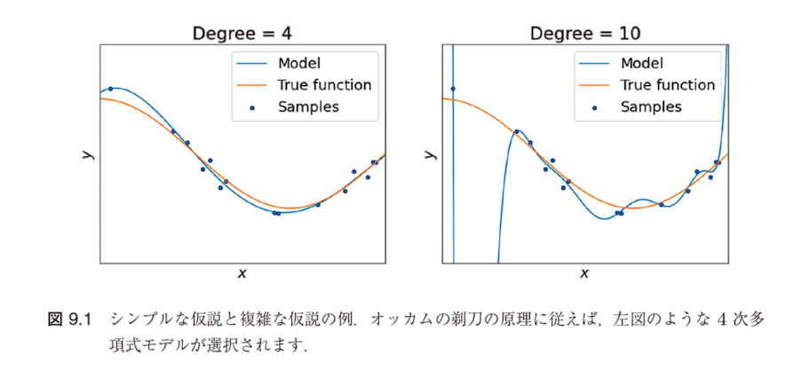
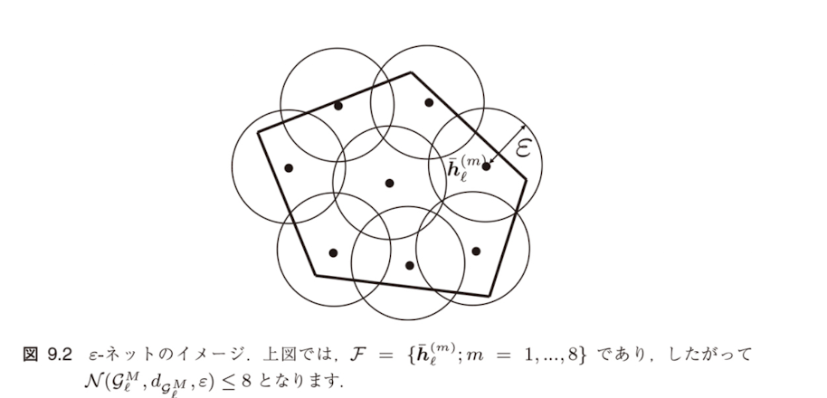
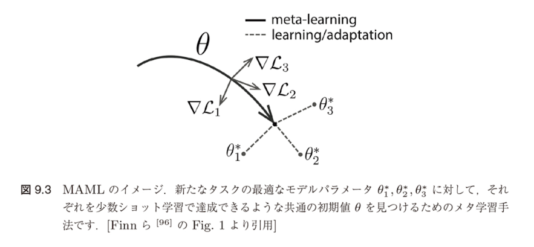
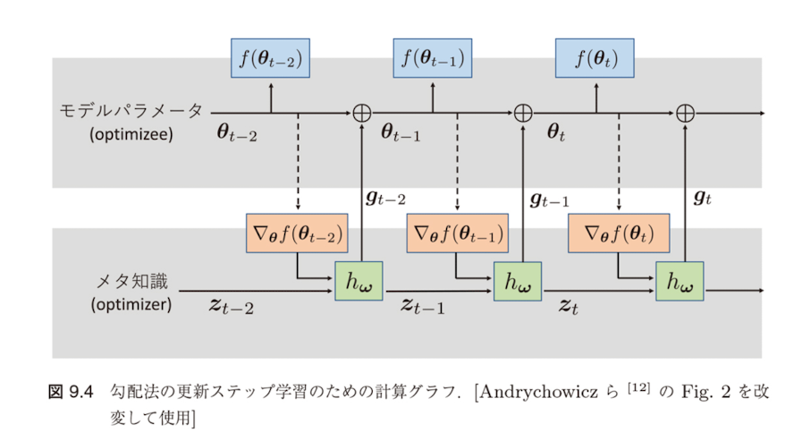
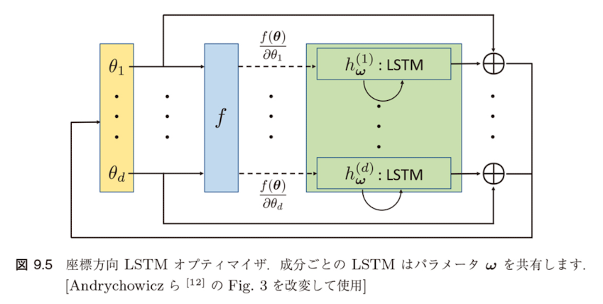
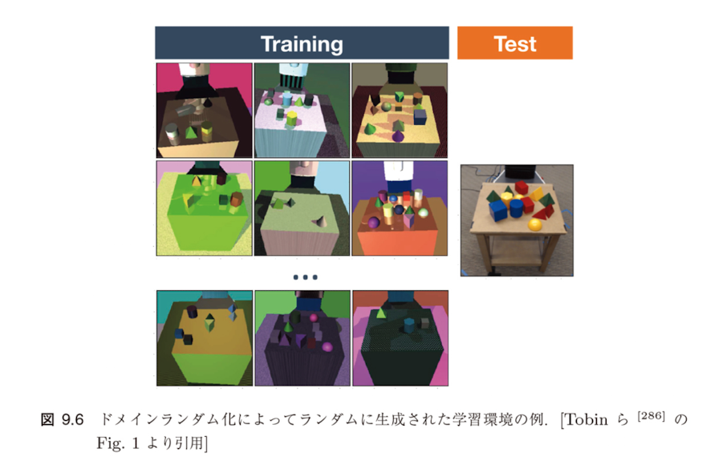
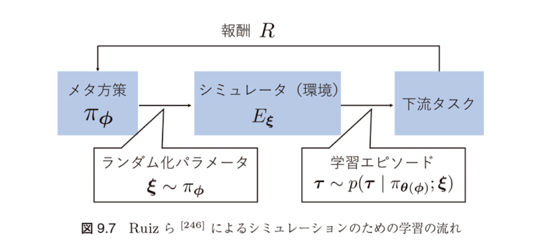

統合版
転移学習（機械学習プロフェッショナルシリーズ）
勉強会資料
作成日：2025年8月
メタ学習
複数のタスクからそれらに共通する知識を学習する手法
問題設定：「友人が大好きなウォータースポーツを楽しむ日」を予測したい
これらの特徴量 $\mathbf{x} = (x_1, x_2, x_3, x_4, x_5, x_6)$ からウォータースポーツを楽しんだこと（$y = 1$）を推定する
仮説 $h(\mathbf{x})$：
$$h(\mathbf{x}) = \langle x_1, x_2, \ldots, x_6 \rangle$$ $$= \begin{cases} 1 & \text{if } (x_1 = *) \land (x_2 = *) \land \cdots \land (x_6 = *) \\ 0 & \text{otherwise} \end{cases}$$表9.1の内容：概念学習における訓練データの例
| データID | 天気 | 気温 | 湿度 | 風 | 水温 | 天気予報 | 楽しんだ |
|---|---|---|---|---|---|---|---|
| 1 | 晴れ | 暖かい | 普通 | 強い | 温かい | 当たり | はい |
| 2 | 晴れ | 暖かい | 高い | 強い | 温かい | 当たり | はい |
| 3 | 雨 | 寒い | 高い | 強い | 温かい | はずれ | いいえ |
| 4 | 晴れ | 暖かい | 高い | 強い | 冷たい | はずれ | はい |
バージョン空間：有限の訓練データに基づいて仮説を学習するとき、訓練データを完全に説明する複数の仮説が存在し得る。そのような仮説の集合
$h_1(\mathbf{x}) = \langle$晴れ, 暖かい, *, 強い, *, *$\rangle$
$h_2(\mathbf{x}) = \langle$晴れ, *, *, 強い, *, *$\rangle$
$h_3(\mathbf{x}) = \langle$晴れ, 暖かい, *, *, *, *$\rangle$
事例： $\mathbf{x} = ($晴れ, 寒い, 普通, 強い, 温かい, 当たり$)$
オッカムの剃刀
データをうまく説明する複数の仮説がある場合、その中で最もシンプルな仮説を用いるべきである
図9.1：シンプルな仮説と複雑な仮説の例

4次多項式モデル vs 10次多項式モデル
両者とも訓練データに対して同程度の性能を示すが、オッカムの剃刀の原理に従えば4次多項式モデルが選択される
帰納バイアス：「どのような仮説がよりよいか」という、仮説（予測モデル）に対する一段階メタな仮説を表すもの
メタ学習の動機
これが帰納バイアス学習（inductive bias learning）またはメタ学習（meta-learning）の動機付けになります
メタ学習の目的
帰納バイアスを学習すること
統計的メタ学習問題：
入力空間：$\mathcal{X}$、出力空間：$\mathcal{Y}$
同時分布：$P_{X,Y} = P_{\mathcal{X} \times \mathcal{Y}}$ を $\mathcal{X} \times \mathcal{Y}$ 上の同時分布
仮説集合：$\mathcal{H} = \{h : \mathcal{X} \rightarrow \mathcal{Y}\}$
損失関数：$\ell : \mathcal{Y} \times \mathcal{Y} \rightarrow \mathbb{R}$
定義3.20による学習アルゴリズム：
$n$個のラベルありデータ $D_n = \{(\mathbf{x}_i, y_i)\}_{i=1}^n \subset \mathcal{X} \times \mathcal{Y}$ を受け取りある仮説 $h \in \mathcal{H}$ を返す写像
タスク：データの生成分布 $P_{X,Y}$ と損失 $\mathcal{L}$ の組 $\mathcal{T} = (P_{X,Y}, \mathcal{L})$
環境：タスク集合 $\mathbb{T}$ とタスク分布 $P(\mathcal{T})$ の組 $(\mathbb{T}, P(\mathcal{T}))$
目標：顔認識問題における帰納バイアスを学習したい
$P(\mathcal{T})$ として顔認識型の問題に対して高いピークを持つような確率分布を考える
対比例：文字認識問題における帰納バイアス学習
$P(\mathcal{T})$ として文字認識型の問題に対してピークを持つような確率分布を考える
メタ期待リスク $\mathcal{R}(\mathcal{H})$ の定義：
$$\mathcal{R}(\mathcal{H}) = \mathbb{E}_{\mathcal{T} \sim P(\mathcal{T})} \left[ \inf_{h \in \mathcal{H}} R(h) \right] \quad (9.5)$$ $$= \mathbb{E}_{(P_{X,Y}, \mathcal{L}) \sim P(\mathcal{T})} \left[ \inf_{h \in \mathcal{H}} \mathbb{E}_{(\mathbf{x}, y) \sim P_{X,Y}} [\mathcal{L}(\mathbf{x}, y; h)] \right]$$統計的メタ学習の目的
仮説集合の集合 $\mathbb{H} = \{ \mathcal{H}\}$ からメタ期待リスク（meta-expected risk）を最小にするような仮説集合 $\mathcal{H}$ を見つけること
メタ経験リスク $\hat{\mathcal{R}}(\mathcal{H})$ の定義：
$$\hat{\mathcal{R}}(\mathcal{H}) = \frac{1}{M} \sum_{m=1}^M \inf_{h \in \mathcal{H}} \hat{R}_{S_m}(h) \quad (9.6)$$ $$= \frac{1}{M} \sum_{m=1}^M \inf_{h \in \mathcal{H}} \sum_{i=1}^{n_m} \mathcal{L}^{(S_m)}(\mathbf{x}_i^{(S_m)}, y_i^{(S_m)}; h)$$通常の学習アルゴリズムと同様に、メタ学習アルゴリズム $A_{\text{meta}}$ は一般に $m$ 個のタスクにおけるデータ集合 $D_{S_m}$, $m = 1, 2, \ldots$ を入力すると、ある仮説集合を出力する写像
$$A_{\text{meta}} : \bigcup_{m=1}^{\infty} \bigcup_{n_m=1}^{\infty} (\mathcal{X}_{S_m} \times \mathcal{Y}_{S_m})^{n_m} \rightarrow \mathbb{H} \quad (9.7)$$重要な性質：
単調性：
最適化の課題
もし $\mathbb{H}$ に含まれるすべての $\mathcal{H}$ に包含関係が成り立つならば、常に最大の要素数を持つ $\mathcal{H}$ が選択されることになります。一方、仮説集合の間に包含関係が成り立つかどうかは集合族 $\mathbb{H}$ のとり方に依存します。したがって、$\mathcal{R}(\mathcal{H})$ や $\hat{\mathcal{R}}(\mathcal{H})$ の最小化は、一般には「最大の $\mathcal{H}$ を選ぶ」という単純なものにはなりません。
定理9.3
$\mathcal{P}$ を $\mathcal{X} \times \mathcal{Y}$ 上の同時分布 $P_{XY}$ の集合（タスク集合）とし、$Q$ を $\mathcal{P}$ 上の確率分布（タスク分布）とします。また、タスク $P_m$, $m = 1, \ldots, M$ は $Q$ による $\mathcal{P}$ からのサンプルであり、各タスクのデータ $\{(\mathbf{x}_{m,i}, y_{m,i})\}_{i=1}^n$ は分布 $P_m$ により生成されているとします。さらに、$\mathbb{H}$ を許容的な仮説集合族とします。もしタスク数 $M$ およびサンプルサイズ $n$ に対してそれぞれ
$$M \geq \max \left\{ \frac{256}{\varepsilon^2} \log \frac{8C(\frac{\varepsilon}{32}, \mathcal{G}^*)}{\delta}, \frac{64}{\varepsilon^2} \right\} \quad (9.14)$$ $$n \geq \max \left\{ \frac{256}{n\varepsilon^2} \log \frac{8C(\frac{\varepsilon}{32}, \mathcal{G}_\ell^M)}{\delta}, \frac{64}{\varepsilon^2} \right\}$$が成り立つならば、少なくとも $1 - \delta$ 以上の確率で、任意の $\mathcal{H} \in \mathbb{H}$ に対して、(9.9)である
$$\mathcal{R}(\mathcal{H}) \leq \hat{\mathcal{R}}(\mathcal{H}) + \varepsilon$$が成り立ちます。ここで、$C(a, \mathcal{G}^*)$ および $C(a, \mathcal{G}_\ell^M)$ は，
$$C(a, \mathcal{G}^*) = \sup_Q N(\mathcal{G}^*, d_{\mathcal{G}^*}, a)$$ $$C(a, \mathcal{G}_\ell^M) = \sup_{P_1, \ldots, P_M} N(\mathcal{G}_\ell^M, d_{\mathcal{G}_\ell^M}, a)$$で定まり、それぞれ $\mathcal{G}^*$ および $\mathcal{G}_\ell^M$ の、タスク分布 $Q$ およびタスク $P_1, \ldots, P_M$ に関する最悪ケースの被覆数を表します。
仮説 $h$ として、入力 $\mathbf{x} \in \mathcal{X}$ とパラメータ $\mathbf{w} \in \mathbb{R}^D$ を引数にとり、$[0, 1]$ に値をとる関数を考える。
$h : \mathcal{X} \times \mathbb{R}^D \rightarrow [0, 1]$ を考え、仮説集合 $\mathcal{H}$ は
$$\mathcal{H} = \{h(\cdot, \mathbf{w}) : \mathbf{w} \in \mathbb{R}^D\} \quad (9.8)$$を扱う
定義9.1（仮説集合の許容性）
(9.8)で定まる仮説集合 $\mathcal{H}$ が許容的（permissible）であるとは、$h \in \mathcal{H}$ が $\mathcal{X}$ と $\mathbb{R}^D$ のボレル集合族の直積 $B(\mathcal{X}) \times B(\mathbb{R}^D)$ で定まる $\sigma$ 集合族に関して可測であること
仮説集合 $\mathcal{H} \in \mathbb{H}$ と損失関数 $\ell$ に対して、$\mathcal{H}_\ell = \{\ell \circ h; h \in \mathcal{H}\}$ とおく
$\mathcal{H}_\ell$ の元は仮説 $h \in \mathcal{H}$ と損失関数 $\ell$ の合成関数であり、任意の $(\mathbf{x}, y) \in \mathcal{X} \times \mathcal{Y}$ に対して $\ell(h(\mathbf{x}), y)$ で定まる
$M$ 個の仮説 $h_1, \ldots, h_M \in \mathcal{H}$ に対して、関数 $\bar{h}_\ell : (\mathcal{X} \times \mathcal{Y})^M \rightarrow [0, 1]$ を
$$\bar{h}_\ell(\{(\mathbf{x}_m, y_m)\}_{m=1}^M) = \frac{1}{M} \sum_{m=1}^M \ell(h_m(\mathbf{x}_m), y_m)$$で定め、$\mathcal{H}_\ell^M = \{\bar{h}_\ell; h_1, \ldots, h_M \in \mathcal{H}\}$ とおく
データ点をそれぞれ別々の仮説で評価した損失の算術平均
$\mathcal{H} \in \mathbb{H}$ に対して関数 $H^* : \mathcal{P} \rightarrow [0, 1]$ を
$$H^*(P_{XY}; \mathcal{H}) = \inf_{h \in \mathcal{H}} R_{P_{XY}}(h)$$ $$= \inf_{h \in \mathcal{H}} \mathbb{E}_{(\mathbf{x}, y) \sim P_{XY}} [\ell(h(\mathbf{x}), y)]$$$P_1, \ldots, P_M \in \mathcal{P}$ を $\mathcal{X} \times \mathcal{Y}$ 上の同時分布の列とし、任意の $\bar{h}_\ell, \bar{h}_\ell' \in \mathcal{G}_\ell^M$ に対して
$$d_{\mathcal{G}_\ell^M}(\bar{h}_\ell, \bar{h}_\ell') = \int |\bar{h}_\ell(\{(\mathbf{x}_m, y_m)\}_{m=1}^M) - \bar{h}_\ell'(\{(\mathbf{x}_m, y_m)\}_{m=1}^M)|$$ $$dP_1(\mathbf{x}_1, y_1) \cdots dP_M(\mathbf{x}_M, y_M) \quad (9.12)$$$\mathcal{P}$ 上の任意の分布（すなわちタスク分布）$Q$ と任意の $H_1^*, H_2^* \in \mathcal{G}^*$ に対して，
$$d_{\mathcal{G}^*}(H_1^*, H_2^*) = \int |H_1^*(P) - H_2^*(P)| dQ(P) \quad (9.13)$$定義9.2（$\mathcal{G}_\ell^M$ の被覆数）
$\mathcal{F}$ を $\mathcal{G}_\ell^M$ の部分集合とし、$\varepsilon > 0$ とします。任意の $\bar{h}_\ell \in \mathcal{G}_\ell^M$ に対して、ある $\bar{h}_\ell' \in \mathcal{F}$ が存在して、$d_{\mathcal{G}_\ell^M}(\bar{h}_\ell, \bar{h}_\ell') < \varepsilon$ を満たすとき、$\mathcal{F}$ を $\mathcal{G}_\ell^M$ の $\varepsilon$-ネットと呼びます。$\mathcal{G}_\ell^M$ の $\varepsilon$-ネットが達成しうる最小の要素数を、$\mathcal{G}_\ell^M$ の被覆数と呼び、$N(\mathcal{G}_\ell^M, d_{\mathcal{G}_\ell^M}, \varepsilon)$ と書きます。すなわち，
$$N(\mathcal{G}_\ell^M, d_{\mathcal{G}_\ell^M}, \varepsilon) = \min_{\mathcal{F}: \mathcal{G}_\ell^M \text{の} \varepsilon\text{-ネット}} |\mathcal{F}|$$図9.2：$\varepsilon$-ネットのイメージ

上図では、$\mathcal{F} = \{\bar{h}_\ell^{(m)}; m = 1, \ldots, 8\}$ であり、したがって $N(\mathcal{G}_\ell^M, d_{\mathcal{G}_\ell^M}, \varepsilon) \leq 8$ となります。
定理9.3
$\mathcal{P}$ を $\mathcal{X} \times \mathcal{Y}$ 上の同時分布 $P_{XY}$ の集合（タスク集合）とし、$Q$ を $\mathcal{P}$ 上の確率分布（タスク分布）とします。また、タスク $P_m$, $m = 1, \ldots, M$ は $Q$ による $\mathcal{P}$ からのサンプルであり、各タスクのデータ $\{(\mathbf{x}_{m,i}, y_{m,i})\}_{i=1}^n$ は分布 $P_m$ により生成されているとします。さらに、$\mathbb{H}$ を許容的な仮説集合族とします。もしタスク数 $M$ およびサンプルサイズ $n$ に対してそれぞれ
$$M \geq \max \left\{ \frac{256}{\varepsilon^2} \log \frac{8C(\frac{\varepsilon}{32}, \mathcal{G}^*)}{\delta}, \frac{64}{\varepsilon^2} \right\} \quad (9.14)$$ $$n \geq \max \left\{ \frac{256}{n\varepsilon^2} \log \frac{8C(\frac{\varepsilon}{32}, \mathcal{G}_\ell^M)}{\delta}, \frac{64}{\varepsilon^2} \right\}$$が成り立つならば、少なくとも $1 - \delta$ 以上の確率で、任意の $\mathcal{H} \in \mathbb{H}$ に対して、(9.9)である
$$\mathcal{R}(\mathcal{H}) \leq \hat{\mathcal{R}}(\mathcal{H}) + \varepsilon$$が成り立ちます。ここで、$C(a, \mathcal{G}^*)$ および $C(a, \mathcal{G}_\ell^M)$ は，
$$C(a, \mathcal{G}^*) = \sup_Q N(\mathcal{G}^*, d_{\mathcal{G}^*}, a)$$ $$C(a, \mathcal{G}_\ell^M) = \sup_{P_1, \ldots, P_M} N(\mathcal{G}_\ell^M, d_{\mathcal{G}_\ell^M}, a)$$で定まり、それぞれ $\mathcal{G}^*$ および $\mathcal{G}_\ell^M$ の、タスク分布 $Q$ およびタスク $P_1, \ldots, P_M$ に関する最悪ケースの被覆数を表します。
定理の主張
(9.9)において、$\mathcal{R}$ と $\hat{\mathcal{R}}$ が近いことを保証するためのタスク数 $M$ とサンプルサイズ $n$ が、導入した関数集合 $\mathcal{G}_\ell^M$ および $\mathcal{G}^*$ の被覆数によって制約されることを主張するものです。
パラメータ空間の巨大化
理論と実践のギャップ
メタ訓練の目的
メタ経験リスク（9.6）を最小化して仮説集合を学習するステップ
メタ訓練の定式化：
$$\hat{\mathcal{H}} = \arg\min_{\mathcal{H} \in \mathbb{H}} \hat{\mathcal{R}}(\mathcal{H}) \quad (9.15)$$ここで、メタ経験リスク $\hat{\mathcal{R}}(\mathcal{H})$ は：
$$\hat{\mathcal{R}}(\mathcal{H}) = \frac{1}{M} \sum_{m=1}^M \inf_{h \in \mathcal{H}} \hat{R}_{S_m}(h) \quad (9.6)$$メタテストの目的
メタ訓練で学習された仮説集合 $\hat{\mathcal{H}}$ の性能を新しいタスクで検証する
$Q$ 個のテストタスク $\mathcal{T}_{T_q} = \{P_{X,Y}^{(T_q)}, \mathcal{L}^{(T_q)}\} \sim P(\mathcal{T})$, $q = 1, \ldots, Q$ を用意
各タスクにおける生成分布から得られたデータ $D_{T_q} \sim P_{X,Y}^{(T_q)}$ を以下に分割：
$D_{T_q}^{\text{tr}}$ に対して通常の仮説の学習問題を解く
各テストタスク $q$ に対する学習問題：
$$\min_{h \in \hat{\mathcal{H}}} R_{T_q}(h) = \frac{1}{|D_{T_q}^{\text{tr}}|} \sum_{(\mathbf{x}, y) \in D_{T_q}^{\text{tr}}} \mathcal{L}^{(T_q)}(\mathbf{x}, y; h) \quad (9.16)$$この最適化により仮説 $\hat{h}_{T_q}$ を得る
メタ学習の最終目標
メタ訓練で得られた $\hat{\mathcal{H}}$ がどれくらいよい帰納バイアスなのかが評価される
メタ知識 $\omega$ の定義
メタ学習の学習対象を一般にメタ知識（meta-knowledge）と呼び、パラメータ $\omega$ で表すことにします
タスク $\mathcal{T} = (P_{X,Y}, \mathcal{L})$ においてメタ知識 $\omega$ を用いたときの損失を記号 $\mathcal{L}(\omega; P_{X,Y})$ で表すことにすると、$\omega$ の学習は (9.5) のメタ期待リスク $\mathcal{R}(\mathcal{H})$ を一般化した
$$\mathcal{R}(\omega) = \mathbb{E}_{\mathcal{T} \sim P(\mathcal{T})}[\mathcal{L}(\omega; P_{X,Y})] \quad (9.17)$$を $\omega$ について最小化することで行われます。
損失 $\mathcal{L}(\omega; P_{X,Y})$ は、メタ知識 $\omega$ のもとでデータ $D \sim P_{X,Y}$ から学習されたモデルの性能を表します。
$\mathcal{T}_{S_1} = (P_{X,Y}^{(S_1)}, \mathcal{L}^{(S_1)}), \ldots, \mathcal{T}_{S_M} = (P_{X,Y}^{(S_M)}, \mathcal{L}^{(S_M)})$ をタスク分布 $P(\mathcal{T})$ からランダムに得られた $M$ 個のタスクとしたとき、$\mathcal{R}(\omega)$ は (9.6) のメタ経験リスク $\hat{\mathcal{R}}(\mathcal{H})$ の一般化
$$\hat{\mathcal{R}}(\omega) = \frac{1}{M} \sum_{m=1}^M \mathcal{L}^{(S_m)}(\omega; P_{X,Y}^{(S_m)}) \quad (9.18)$$によって近似されます。
各テストタスク $q = 1, \ldots, Q$ に対して：
$$\min_{h \in \mathcal{H}} \hat{R}_{T_q}(h) = \frac{1}{|D_{T_q}^{\text{tr}}|} \sum_{(\mathbf{x}, y) \in D_{T_q}^{\text{tr}}} \mathcal{L}^{(T_q)}(\omega; P_{X,Y}^{(T_q)}) \quad (9.19)$$を解いて仮説 $\hat{h}_{T_q}$ を学習し、$D_{T_q}^{\text{te}}$ から計算されるテスト誤差によって $\hat{\omega}$ の性能を検証します。
例9.1（機械学習モデルのハイパーパラメータ最適化）
メタ学習を上述のように定式化すると、例えば従来の機械学習におけるモデルのハイパーパラメータ最適化をメタ学習として解釈することができます。
モデルパラメータ $\theta$ およびハイパーパラメータ $\omega$ を持つ仮説を $h_{\theta,\omega}$ と書くとき、K重交差検証法は、以下の最適化問題として定式化されます：
K重交差検証の最適化問題：
$$\min_\omega \frac{1}{K} \sum_{k=1}^K \frac{1}{|D_k^{\text{val}}|} \sum_{(\mathbf{x}, y) \in D_k^{\text{val}}} \mathcal{L}(\mathbf{x}, y; h_{\hat{\theta}_k, \omega})$$ $$\text{subject to } \hat{\theta}_k = \arg\min_\theta \frac{1}{|D_k^{\text{tr}}|} \sum_{(\mathbf{x}, y) \in D_k^{\text{tr}}} \mathcal{L}(\mathbf{x}, y; h_{\theta, \omega}), \quad k = 1, 2, \ldots, K$$(9.20)
メタ学習の2レベル最適化問題：
$$\min_\omega \sum_{m=1}^M \mathcal{L}^{\text{meta}}(\hat{\theta}_m(\omega), \omega, D_{S_m}^{\text{val}}) \quad (9.21)$$ $$\text{subject to } \hat{\theta}_m(\omega) = \arg\min_\theta \mathcal{L}^{(S_m)}(\theta, \omega, D_{S_m}^{\text{tr}}), \quad m = 1, \ldots, M$$非対称性による制約
メタ損失の記号 $\mathcal{L}^{\text{meta}}$ は内部ループであるベース学習の損失 $\mathcal{L}^{(S_m)}$ と区別し外部ループの損失であることを明示するために用いているものですが、メタ損失自体は基本的にベース学習の損失と同じ損失関数によって評価されます
環境 $(\mathbb{T}, P(\mathcal{T}))$ が線形回帰の空間として与えられる場合を例として取り上げ、(9.21)で抽象的に定義されたメタ知識の学習が具体的にどう実現されるのかを説明します
いま、$\mathcal{X} = \mathbb{R}^d$、$\mathcal{Y} = \mathbb{R}$ とし、タスク $\mathcal{T} = (P_{X,Y}, \mathcal{L}) \sim P(\mathcal{T})$ は、データ生成分布 $P_{X,Y}$ が
$$(\mathbf{x}, y) \sim P_{X,Y} \Leftrightarrow \mathbf{x} \sim P_X, \quad \varepsilon \sim \eta, \quad y = \boldsymbol{\theta}^{\top} \mathbf{x} + \varepsilon \quad (9.22)$$となるような周辺分布 $P_X$、ノイズ分布 $\eta$ および線形モデルのパラメータ $\boldsymbol{\theta}$ の三つ組 $(P_X, \eta, \boldsymbol{\theta})$ で定まるとします。また、損失 $\mathcal{L}$ は二乗損失 $\mathcal{L}(\mathbf{x}, y; h) = (h(\mathbf{x}) - y)^2$ で与えられるものとします。
このとき、Denevi ら [75] は線形モデルのパラメータ $\boldsymbol{\theta}$ を学習するためのアルゴリズム $\mathcal{A}_\omega : D_n = \{(\mathbf{x}_i, y_i)\}_{i=1}^n \mapsto \hat{\boldsymbol{\theta}}(D_n; \omega)$ として以下のようなリッジ回帰型の最適化問題を考察しました
$$\mathcal{A}_\omega(D_n) = \hat{\boldsymbol{\theta}}(D_n; \omega) = \arg\min_{\boldsymbol{\theta} \in \mathbb{R}^d} \frac{1}{n} \|\mathbf{X}\boldsymbol{\theta} - \mathbf{y}\|^2 + \lambda\|\boldsymbol{\theta} - \boldsymbol{\omega}\|^2 \quad (9.23)$$リッジ回帰 (9.23) におけるメタ知識 $\boldsymbol{\omega}$ の学習は、メタ期待リスク
$$\mathcal{R}(\boldsymbol{\omega}) = \mathbb{E}_{\mathcal{T} \sim P(\mathcal{T})} \left[ \mathbb{E}_{D_n \sim P_{X,Y}} \left[ \mathbb{E}_{(\mathbf{x}, y) \sim P_{X,Y}} \left[ \frac{1}{2} \left( (\hat{\boldsymbol{\theta}}(D_n; \boldsymbol{\omega}))^{\top} \mathbf{x} - y \right)^2 \right] \right] \right] \quad (9.24)$$を $\boldsymbol{\omega}$ について最小化する問題として定義できます。
リッジ回帰 (9.23) のモデルパラメータ $\hat{\boldsymbol{\theta}}(D_n; \boldsymbol{\omega})$ が、$C = \frac{1}{n}\mathbf{X}^{\top}\mathbf{X} + \lambda I$ として $\hat{\boldsymbol{\theta}}(D_n; \boldsymbol{\omega}) = C^{-1}(\frac{1}{n}\mathbf{X}^{\top} \mathbf{y} + \lambda\boldsymbol{\omega})$ と解析的に書けることから、メタ期待リスク $\mathcal{R}(\boldsymbol{\omega})$ は以下のように書き換えることができます (Denevi ら [75] の Proposition 1)。
$$\mathcal{R}(\boldsymbol{\omega}) = \frac{1}{2} \mathbb{E}_{\mathbf{x}, \tilde{y}} \left[ (\boldsymbol{\omega}^{\top} \tilde{\mathbf{x}} - \tilde{y})^2 \right] \quad (9.25)$$ここで、$\tilde{\mathbf{x}} = \lambda C^{-1} \mathbf{x}$、$\tilde{y} = y - \frac{1}{\lambda n} (\mathbf{X}^{\top} \mathbf{y})^{\top} \tilde{\mathbf{x}}$ とおきました。
(9.25)の $\mathcal{R}(\boldsymbol{\omega})$ はメタ経験リスク
$$\hat{\mathcal{R}}(\boldsymbol{\omega}) = \frac{1}{2m} \sum_{j=1}^m (\boldsymbol{\omega}^{\top} \tilde{\mathbf{x}}_j^{\text{val}} - \tilde{y}_j^{\text{val}})^2 \quad (9.26)$$によって近似されます。ここで、$\tilde{\mathbf{x}}_j^{\text{val}}$ および $\tilde{y}_j^{\text{val}}$ は $\{(\mathbf{x}_j^{\text{val}}, y_j^{\text{val}})\}$ を訓練データと異なる検証データとして (9.25) の $\tilde{\mathbf{x}}, \tilde{y}$ と同様に計算されるものです。
データ $D_n$ を受け取り、サイズ $n - m$ の訓練データ $D^{\text{tr}}$ とサイズ $m$ の検証データ $D^{\text{val}}$ に分割して $\tilde{\mathbf{x}}_j^{\text{val}}, \tilde{y}_j^{\text{val}}, j = 1, \ldots, m$ を以下で計算します。
メタ経験リスク $\hat{\mathcal{R}}(\boldsymbol{\omega})$ の勾配 $\nabla_{\boldsymbol{\omega}} \hat{\mathcal{R}}(\boldsymbol{\omega})$ を計算し、
でメタ知識 $\boldsymbol{\omega}$ を更新します。
メタ学習の実現方法
以上のようなメタ学習の実現は、メタ知識 $\boldsymbol{\omega}$ の学習であると同時に、(9.23)のような写像 $\mathcal{A}_\omega$ の学習と捉えることもできます
メタ学習は3つの軸で分類されます
| 分類軸 | 内容 | 例 |
|---|---|---|
| 少数ショット vs 多数ショット | 目標ドメインの利用可能なデータ量 | Few-shot learning, Full-shot learning |
| シングルタスク vs マルチタスク | 適応対象のタスク数 | 単一目標ドメイン、多目標ドメイン |
| オンライン vs オフライン | メタ知識の更新タイミング | 継続的学習、事前学習 |
勾配法による更新
メタ損失関数の $\omega$ に関する勾配 $\mathcal{L}^{\text{meta}}/\partial \omega$ を利用
典型的な勾配更新式：
$\omega$ はモデルパラメータ $\theta$ を介して $\mathcal{L}^{\text{meta}}$ に寄与
勾配：$(\partial \mathcal{L}^{\text{meta}}/\partial \theta)(\partial \theta/\partial \omega)$
進化的探索の利点
メタ表現の種類
「何をメタ学習の対象 = メタ知識とするのか」という観点による分類
メタ知識 $\omega$ として何を考えるか
学習戦略のどの部分をメタ学習の対象とし、どの部分を対象としないか（ユーザが与える固定戦略とするか）を決めること
| メタ知識の種類 | 内容 | 文献 |
|---|---|---|
| 仮説集合 | $\mathcal{H} = \{h_\theta | \theta \in \Theta\}$ | 9.2.2節 |
| パラメータ初期値 | $h_\theta$ を規定するパラメータ $\theta$ の初期化 | [96] |
| ハイパーパラメータ | モデルの設定や学習率など | [23, 99] |
| ブラックボックスモデル | サポート集合→ベースタスクモデルパラメータ | 9.2.4.2節 |
ニューラルネットワークのアーキテクチャ構造
仮説がニューラルネットワークの場合、アーキテクチャの構成も学習の対象となります
オプティマイザ自体をメタ知識として学習
同時訓練の問題
各タスクのサポート集合$D^{\text{tr}}$に対する期待損失の最小化によってメタ知識を学習しようとしている点にある。
設定
損失関数：
問題点
期待リスク$\mathbb{E}_{\mathcal{T}}[\mathcal{L}^{\mathcal{T}}]$は恒等的に0を返す仮説$h(x; \theta) \equiv 0$によって最小化されるが、これは明らかに未知のタスクに対する初期値として有用ではない。
MAMLの特徴
新たなタスクに対して、少数ショット学習でそれぞれの最適なモデルパラメータが発見できるような共通の初期値を見つけることを目標とします。
図9.3 MAMLのイメージ

新たなタスクの最適なモデルパラメータ$\theta_1^*, \theta_2^*, \theta_3^*$に対して、それぞれを少数ショット学習で到達できるような共通の初期値$\theta$を見つけるためのメタ学習手法です。
MAMLは非常にシンプルで、以下の3ステップを繰り返します
Step 1: タスク分布$P(\mathcal{T})$からタスク$\mathcal{T}_i = (\{D_{T_i}^{\text{tr}}, D_{T_i}^{\text{val}}\}, \mathcal{L}^{T_i})$をサンプリング
Step 2: タスク$\mathcal{T}_i$固有のモデルパラメータ$\theta^{T_i}$を$\theta_0^{T_i} \leftarrow \theta$と初期化し、勾配法で$S$回更新します。
各反復$s = 1, ..., S$の更新則：
Step 3: 各タスクの検証誤差を小さくするようにすべてのタスクで共有する初期化パラメータ$\theta$を更新します。
ここで、$\beta > 0$は学習率パラメータです。
重要な理解
MAMLは、すべてのタスクで同じ仮説集合を用いるとき、メタ知識$\omega$としてモデルパラメータ$\theta$をとった2レベル最適化問題(9.21)と解釈することができます。
| 2レベル最適化の要素 | MAMLでの対応 |
|---|---|
| 制約条件 | Step2：個別タスクでの適応 |
| 目的関数 | Step3：メタパラメータの更新 |
平均二乗損失：
2値交差エントロピー損失：
強化学習の場合：負の期待報酬
マルコフ決定過程（MDP）をタスクとし、方策関数$\pi_\theta$のパラメータ$\theta$の初期値をメタ学習するアルゴリズムが導出できます。
例9.2のような同時訓練では役に立たない初期化が得られてしまう場合でも、MAMLでは未知のタスクに対してよいパラメータの初期化が得られることが期待できます。
S=1の場合のメタ知識の更新(9.31)：
FOMAMLの改善点
Finn等[96]は勾配を1次近似してメタ学習フェーズのパラメータ更新を行う方法（first order MAML (FOMAML)）も提案しています。
従来のアプローチ vs メタ学習アプローチ
標準的な勾配更新則（式9.33）
ここで、$g_t$はパラメータの更新方向を表すベクトルで、素朴な勾配法では$g_t = \nabla_\theta f(\theta_t)$とします。
$g_0 = 0$として：
$m_0 = v_0 = 0$として：
Wolpertら[318]のNo Free Lunch定理
組合せ最適化問題の設定において、すべての最適化問題に対してランダムサーチよりよい性能を示す最適化アルゴリズムは存在しないことを示しました。
重要な示唆
一般に最適化アルゴリズムの性能を向上させるためには、問題のサブクラスに特化させることが唯一の方法であることを示唆しています。
勾配法の更新則の一般化（式9.36）
現在の勾配$\nabla f(\theta_t)$を入力し、その反復における更新量を出力する写像$g_t(f(\theta_t); \omega)$のパラメータ$\omega$を学習するメタ学習問題を考察しました。
メタ期待リスク（式9.37）
各$f$が一つのタスクを、$P(f)$がタスク分布を表現している。
問題点
(9.37)のメタ期待リスク$\mathcal{R}(\omega)$は最終時点のパラメータ値$\theta^*$のみに依存します。しかし、更新ステップ$g_t$の訓練であることを考えれば、最適化の初期時点からある時点$T$までのすべての解の履歴に依存する目的関数のほうが適していると考えられます。
改良されたメタ期待リスク（式9.38）
各時点$t = 1, ..., T$に対応する適当な重み$w_t \in \mathbb{R}_{\geq 0}$を導入し、新たなメタ期待リスク$\tilde{\mathcal{R}}(\omega)$を定義します。
RNNを用いた更新ステップの生成
$\theta$の更新は$\theta_{t+1} \leftarrow \theta_t + g_t$で行われ、更新ステップ$g_t$はRNNの出力として$(g_t, z_{t+1})^T = h_\omega(\nabla_\theta f(\theta_t), z_t)$で潜在表現$z_{t+1}$とともに生成されます。
重み$w_t$を$w_t = \mathbb{1}[t = T]$（最終時点でのみ1）とり、それ以外の時点では0をとるように設定すれば(9.37)のメタ期待リスクを復元します。
この意味で、(9.38)による定式化は(9.37)の自然な拡張とみなすことができます。
図9.4 勾配法の更新ステップ学習のための計算グラフ

実線に沿った勾配は逆伝播し、破線に沿った勾配は逆伝播しない、すなわち$\partial \nabla_\theta f(\theta_t)/\partial \omega = 0$という仮定をおいています。
計算効率化のための仮定
Andrychowiczら[12]は図の実線に沿った勾配は逆伝播し、破線に沿った勾配は逆伝播しない、すなわち$\partial \nabla_\theta f(\theta_t)/\partial \omega = 0$という仮定をおいています。
RNNを用いる理由
勾配が過去の更新情報を用いることで効率化できるという経験的な事実に基づいています。
Hochreiterら[132]のRNNアーキテクチャ
全結合型のLSTMでした。しかし、これはモデルパラメータ$\theta$の次元$d$が高いとき、パラメータ数が膨大となり、最適化が不安定になるうえにRNNの計算自体も重くなってしまいます。
Andrychowiczら[12]の改善
$\theta$の成分ごとにLSTM$h_\omega^{(1)}, ..., h_\omega^{(d)}$を用意し、$\theta_1, ..., \theta_d$を個別に最適化するアプローチを提案しています。
図9.5 座標方向LSTM オプティマイザ

成分ごとのLSTMはパラメータ$\omega$を共有します。
Sim2Real転移（Sim2Real transfer）
シミュレータによって人工的に生成されたデータを訓練データとして用いてさまざまなタスクを解き、そこで得られた知識を実世界のタスクに適用する問題設定を指します。
| 要因 | 説明 |
|---|---|
| 物理ダイナミクス | 重量・摩擦力・接合部の減衰量や弾性係数など |
| システム同定 | system identification |
| ドメインランダム化 | domain randomization による対応 |
ドメインランダム化
ランダムな性質を持つさまざまな類似ドメインを作り、それらすべてで機能するモデルを学習させるアプローチです。実世界の環境がランダムに生成されたようなシミュレーションドメインの中に含まれているならば、学習されたモデルが実世界の環境に適応できる可能性が高いことが期待されます。
強化学習の基本的な問題設定については13.1節を参照してください。
期待報酬の定式化（式9.39）
ドメインランダム化の定式化
元ドメインと目標ドメインの不一致度を元ドメインの変動としてモデル化しているものと解釈することができます [227]。
一様ドメインランダム化（uniform domain randomization）
各ランダム化パラメータ$\xi_j$を適当な区間$[\xi_j^{\text{low}}, \xi_j^{\text{high}}]$から一様ランダムにサンプリングするというもの [286]。
図9.6 ドメインランダム化によってランダムに生成された学習環境の例

物理ダイナミクスのランダム化
実際、Pengら[227]の研究では、ロボット本体の質量や寸法、接合部の減衰量や弾性係数などの条件がランダム化の対象となっています。
OpenAI Roboticsの成功事例
実際にロボットハンドに50種類の向きを実現させている動画が公開されています。
一様ドメインランダム化の問題点
最も素朴なドメインランダム化の実現方法であり、実際にはより洗練された定式化が望ましいと考えられます。
2レベル最適化問題としての定式化（式9.40）
ガイド付きドメインランダム化の利点
(9.40)の定式化は、タスクの性能や実現境のデータ、シミュレータからのガイダンスなどの補助情報が利用できるという仮定の下でより洗練されたランダム化の戦略を考える方針になります。この意味で、後者をガイド付きドメインランダム化（guided domain randomization）と呼びます。
ガイド付きドメインランダム化では、まず異なるランダム化パラメータ$\xi \sim P(\xi; \omega)$によるそれぞれの環境で方策を学習します。
その後、学習した各方策を目標ドメインの下流タスク（すなわち現実のロボット制御や検証データの予測）で評価しフィードバックを収集します。
Ruizら[246]の強化学習アプローチ
強化学習における報酬をタスクからのフィードバックと捉え、分布$P(\xi; \omega)$を近似する方策$\pi_\phi$を学習するメタ強化学習のアプローチを提案しました。
記号の簡単のため各下流タスクの報酬を単に$R(\xi)$とおくと、$\pi_\phi$の最適化問題は：
REINFORCE rule[317]による勾配計算（式9.42）
$\nabla_\phi R(\phi)$の不偏推定量は、$K$個のランダム化パラメータのサンプル$\xi_1, ..., \xi_K$を用いて：
ここで、$A_k = R(\xi_k) - b$はベースライン値$b$からの改善量の推定値であり、$b$には例えば過去の報酬の指数移動平均を用いることができます。
Learning to simulate アルゴリズム
Ruizら[246]による「シミュレーションのための学習」アルゴリズムは以下の手順の繰り返しで構成されます：
Step 1: メタ方策$\pi_\phi$から$K$個のランダム化パラメータ$\xi_k$を生成します。
Step 2: 各$\xi_k$に対応した$K$個の学習エピソード$\tau_k$を$p(\tau | \pi_\theta; \xi_k)$から生成し、タスク固有の方策$\pi_\theta$を学習します。
Step 3: 各タスクの報酬$R(\xi_k)$を取得し、改善量$A_k = R(\xi_k) - b$を計算します。
Step 4: (9.43)を用いて勾配法でメタ方策のパラメータ$\phi$を更新します。
図9.7 Ruizら[246]によるシミュレーションのための学習の流れ

本章で紹介したメタ学習の問題設定や方法はその一部であり、解介できなかったものの中にも重要な研究が多数存在しています。詳細は、例えばHospedales らのサーベイ論文 [136] やその引用文献を参照してください。